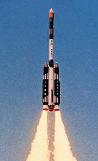
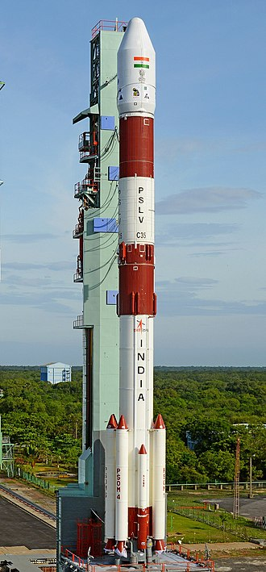
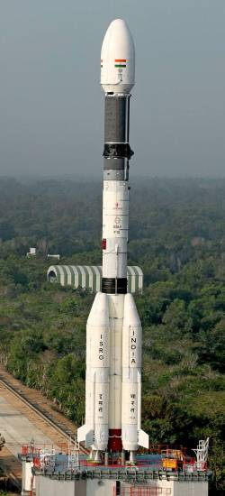
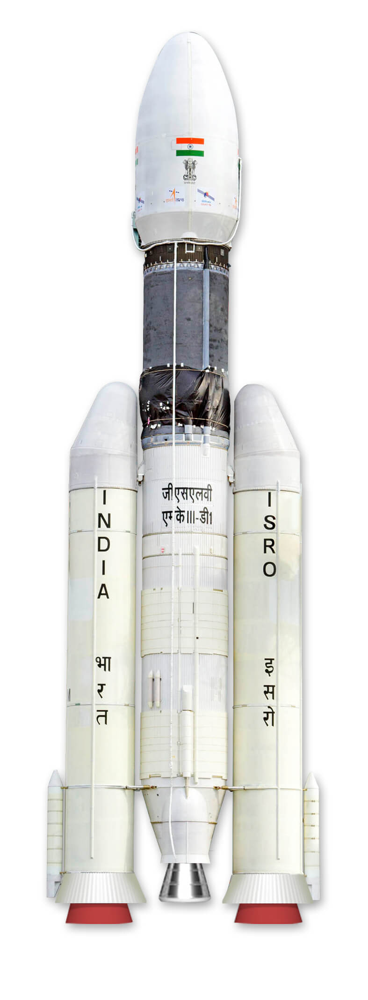
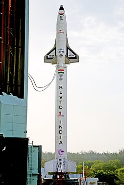

The Satellite Launch Vehicle or SLV was a small-lift launch vehicle project started in the early 1970s by the Indian Space Research Organisation to develop the technology needed to launch satellites. SLV was intended to reach a height of 400 kilometres (250 mi) and carry a payload of 40 kg (88 lb). The first experimental flight of SLV-3, in August 1979, was a failure. The first successful launch took place on 18 July, 1980. It was a four-stage rocket with all solid-propellant motors.
Total Launches
4
Successful Launches
3
The first launch of the SLV took place in Sriharikota on 10 August 1979. The fourth and final launch of the SLV took place on 17 April 1983. It has taken approximately seven years to realise the vehicle from start. The solid motor case for first and second stage are fabricated from 15 CDV6 steel sheets and third and fourth stages from fibre reinforced plastic.
ASLV

Augmented Satellite Launch Vehicle
The Augmented Satellite Launch Vehicle or Advanced Satellite Launch Vehicle, also known as ASLV, was a Small-lift launch vehicle five-stage solid-fuel rocket developed by the Indian Space Research Organisation (ISRO) to place 150 kg satellites into LEO. This project was started by India during the early 1980s to develop technologies needed for a payload to be placed into a geostationary orbit. Its design was based on Satellite Launch Vehicle. ISRO did not have sufficient funds for both the Polar Satellite Launch Vehicle programme and the ASLV programme at the same time and the ASLV programme was terminated after the initial developmental flights. The payloads of ASLV were Stretched Rohini Satellites.
Total Launches
4
Successful Launches
2
The ASLV was a five-stage vehicle. Two strap-on boosters acted as a first stage, with the core stage igniting after booster burn out. The payload capacity of the ASLV was approximately 150 kg (330 lb) to an orbit of 400 km (250 mi) with a 47-degree inclination.
At liftoff, the ASLV generated 909.9 kN (204,500 lbf) of thrust. It was a 41,000-kilogram (90,000 lb) rocket, measuring 23.5 metres (77 ft) in length with a core diameter of one metre (3 ft 3 in). The height to diameter ratio of ASLV was very large which resulted in the vehicle being unstable in flight. This was compounded by the fact that many of the critical events during a launch like the core ignition and the booster separation happened at the Tropopause where the dynamic loads on the launcher was at the maximum.
PSLV

Polar Satellite Launch Vehicle
PSLV is an expendable medium-lift launch vehicle designed and operated by the Indian Space Research Organisation (ISRO). It was developed to allow India to launch its Indian Remote Sensing (IRS) satellites into sun-synchronous orbits, a service that was, until the advent of the PSLV in 1993, commercially available only from Russia. PSLV can also launch small size satellites into Geostationary Transfer Orbit (GTO).
Total Launches
54
Successful Launches
51
Some notable payloads launched by PSLV include India's first lunar probe Chandrayaan-1, India's first interplanetary mission, Mars Orbiter Mission (Mangalyaan) and India's first space observatory, Astrosat.
PSLV has gained credibility as a leading provider of rideshare services for small satellites, owing to its numerous multi-satellite deployment campaigns with auxiliary payloads, usually ride-sharing along with an Indian primary payload. As of February 2021, PSLV has launched 342 foreign satellites from 36 countries. Most notable among these was the launch of PSLV-C37 on 15 February 2017, successfully deploying 104 satellites in sun-synchronous orbit, tripling the previous record held by Russia for the highest number of satellites sent to space on a single launch, until 24 January 2021, when SpaceX launched the Transporter-1 mission on a Falcon 9 rocket carrying 143 satellites into orbit.
Payloads can be integrated in tandem configuration employing a Dual Launch Adapter. Smaller payloads are also placed on equipment deck and customized payload adapters.
GSLV-2

Geosynchronous Satellite Launch Vehicle Mark 2
GSLV Mk II is the largest launch vehicle developed by India, which is currently in operation. This fourth generation launch vehicle is a three stage vehicle with four liquid strap-ons. The indigenously developed cryogenic Upper Stage (CUS), which is flight proven, forms the third stage of GSLV Mk II. From January 2014, the vehicle has achieved four consecutive successes
Total Launches
14
Successful Launches
10
GSLV rockets using the Russian Cryogenic Stage (CS) are designated as the GSLV Mark I while versions using the indigenous Cryogenic Upper Stage (CUS) are designated the GSLV Mark-II. GSLV MARK-II variant uses an Indian cryogenic engine, the CE-7.5, and is capable of launching 2500 kg into geostationary transfer orbit. Previous GSLV vehicles (GSLV Mark I) have used Russian cryogenic engines.
GSLV-3

Geosynchronous Satellite Launch Vehicle Mark III
The GSLV Mk III, also referred to as the Launch Vehicle Mark 3 (LVM3), is a three-stage medium-lift launch vehicle developed by the Indian Space Research Organisation (ISRO). Primarily designed to launch communication satellites into geostationary orbit, it is also identified as the launch vehicle for crewed missions under the Indian Human Spaceflight Programme and dedicated science missions like Chandrayaan-2. The GSLV Mk III has a higher payload capacity than the similarly named GSLV Mk II.
Total Launches
Venus Orbiter
Successful Launches
20 dec 2025
After several delays and a sub-orbital test flight on 18 December 2014, ISRO successfully conducted the first orbital test launch of GSLV Mk III on 5 June 2017 from the Satish Dhawan Space Centre, Andhra Pradesh. In June 2018, the Union Cabinet approved ₹43.38 billion (US$580 million) to build 10 GSLV Mk III rockets over a five-year period.
GSLV Mk III launched CARE, India's space capsule recovery experiment module, Chandrayaan-2, India's second lunar mission and will be used to carry Gaganyaan, the first crewed mission under Indian Human Spaceflight Programme. In October 2021, UK-based global communication satellite provider OneWeb entered into an agreement with ISRO to launch OneWeb satellites aboard the GSLV Mk III along with the PSLV.
RLV-TD

Reusable Launch Vehicle Technology Demonstration
RLV-TD is India's first uncrewed flying testbed developed for the Indian Space Research Organisation (ISRO)'s Reusable Launch Vehicle Technology Demonstration Programme. It is a scaled down prototype of an eventual two-stage-to-orbit (TSTO) reusable launch vehicle.The RLV-TD successfully completed its first atmospheric test flight on 23 May 2016, which lasted for 770 seconds and reached a maximum altitude of 65 kilometres (40 mi).
Prototype Test
23 May 2016
Total Launches
0
It was designed to evaluate various technologies, and development of the final version is expected to take 10 to 15 years. The fully developed RLV is expected to take off vertically like a rocket, deploy a satellite in orbit, return to Earth, and land on a runway.